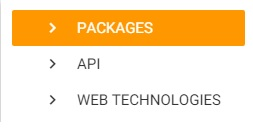

<div class="row newproject-content" >
	<ul class="collapsible popout" data-collapsible="accordion" collapsible-init>
		<li>
			<div class="collapsible-header"><i class="material-icons grey-text">help_outline</i>Добавление дочерней технологии в главную</div>
			<div class="collapsible-body white">
				<p class="pb-none">Для этого нужно нажать на название техноологии, после этого она должна 
			выделиться цветом, как показано на рисунке ниже.</p>
				
				<p class="pt-none">После этого достаточно ввести название дочерней технологии в поле ввода и нажать на кнопку добавить.</p>
			</div>
		</li>
		<li>
			<div class="collapsible-header"><i class="material-icons grey-text">help_outline</i>Изменение, удаление техноологии</div>
			<div class="collapsible-body white">
				<p>Для изменении технологии нужно подвести курсор мыши на название технологии, 
			после чего появится иконка карандаша (<i class="material-icons">mode_edit</i>), после нажатия на нее появится всплывающее окно, в котором можно изменить название технологии. Для удаления соответственно нужно нажать на иконку крестика (<i class="material-icons">close</i>).</p>
				</div>
		</li>
		<li>
			<div class="collapsible-header"><i class="material-icons grey-text">help_outline</i>Просмотр дочерних технологий в главной</div>
			<div class="collapsible-body white">
				<p class="pb-none">Для того чтобы посмотреть дочерние технологии в одной из главных достаточно нажать на иконку стрелки (<i class="material-icons">keyboard_arrow_right</i>) возле технологии. Для того чтобы раскрыть или скрыть все технологии нужно воспользоваться элементами управления показанными на рисунке ниже.</p>
				
			</div>
		</li>
		<li>
			<div class="collapsible-header"><i class="material-icons grey-text">help_outline</i>Перемещение дочерних технологий</div>
			<div class="collapsible-body white">
				<p>Также существует возможность перетащить дочернюю технологию из одной технологии в другую. Для этого достаточно навести курсор на дочернюю технологию, зажать левую клавишу мыши и перетащить в одну из главных технологий.</p>
			</div>
		</li>
	</ul>
</div>